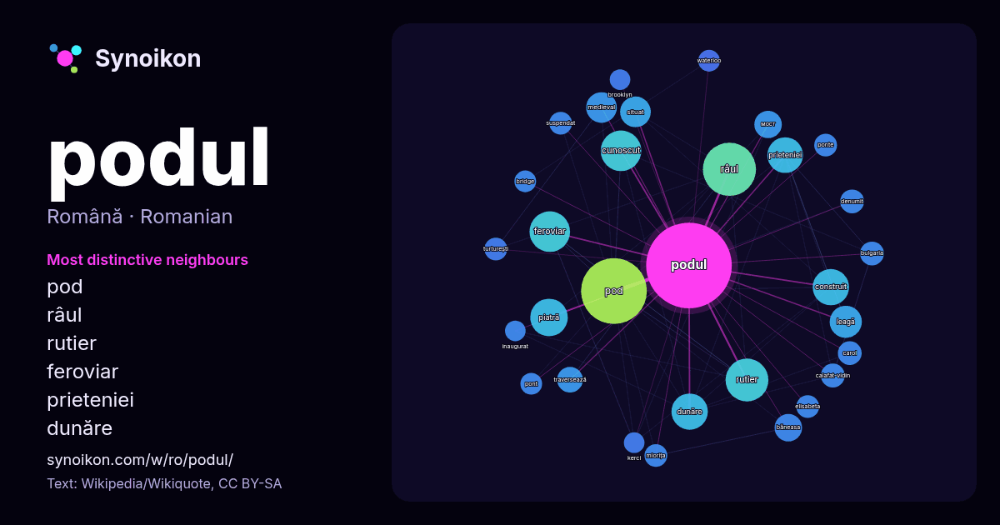

Română · lista cuvintelor zilei
podul
“bridge” · Cuvintele găsite în jurul lui în 977 apariții de pe Wikipedia, Wikiquote.

Cei mai specifici vecini
- pod 73×
- râul 43×
- rutier 37×
- feroviar 33×
- prieteniei 27×
- dunăre 26×
- medieval 20×
- leagă 20×
- piatră 19×
- мост 17×
- băneasa 17×
- cunoscut 16×
- construit 15×
- traversează 14×
- situat 14×
- calafat-vidin 13×
- turturești 12×
- ponte 12×
- miorița 12×
- suspendat 11×
× = de câte ori mai des decât în textul general de pe Wikipedia.
Cei mai frecvenți vecini
- pod 92
- râul 60
- rutier 39
- cunoscut 35
- feroviar 35
- piatră 30
- numele 29
- construit 28
- dunăre 28
- prieteniei 27
- leagă 22
- numit 21
- medieval 20
- situat 20
- băneasa 16
- мост 16
- traversează 14
- lungime 13
- bulgaria 12
- calafat-vidin 12
În context
- Dan Nasta ^ Podul Arhivat în 21 aprilie 2018, la Wayback Machine. pe site-ul All About Romanian Cinema Podul la Internet Movie Database Podul la CineMagia Wikipedia snippets · Podul
- Pentru noul pod rutier și feroviar vedeți Podul peste Dunăre de la Cernavodă. Podul Regele Carol I (redenumit în perioada comunistă Podul Anghel Saligny) Wikipedia snippets · Podul Regele Carol I
- Podul Faidherbe este un pod rutier peste cursul inferior al fluviului Senegal care leagă insula și orașul Saint-Louis din Senegal de litoralul Africii Wikipedia snippets · Podul Faidherbe
- Podul Øresund sau Öresund (în daneză Øresundsbroen, în suedeză Öresundsbron) este un pod-tunel feroviar și rutier peste strâmtoarea Øresund. Podul are Wikipedia snippets · Podul Øresund
- Podul cu Lanțuri din Budapesta, denumit oficial Podul Széchenyi în memoria omului de stat maghiar István Széchenyi, (în maghiară Széchenyi lánchíd) este Wikipedia snippets · Podul cu Lanțuri din Budapesta
- … t cu un pod lung cu șapte arcuri, de aur, zidit negru. Scutul timbrat de o coroană sătească de argint. Drapelul satului Podul Lung reprezintă Wikipedia snippets · Podul Lung, Călărași
- Podul Doamnei este un pod din zidărie de piatră construit în anul 1841 pe teritoriul satului Chițcani (comuna Costești, județul Vaslui). Podul este situat Wikipedia snippets · Podul Doamnei
- Podul Traian este un pod din municipiul Arad, care transversează râul Mureș și asigură legătura atât pentru trafic rutier cât și pentru tramvaie între Wikipedia snippets · Podul Traian din Arad
Mai multe cuvinte
Precalculat la 2026-10-09 cu setările implicite (±5 cuvinte, corpus mediu). Harta interactivă îl poate actualiza cu date live.
Interfață tradusă automat; corecturile sunt binevenite.